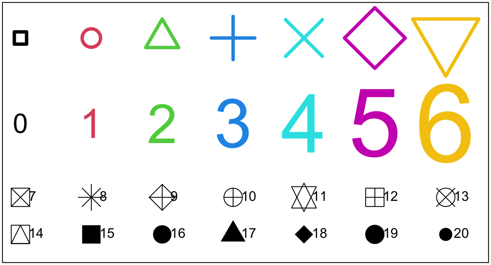
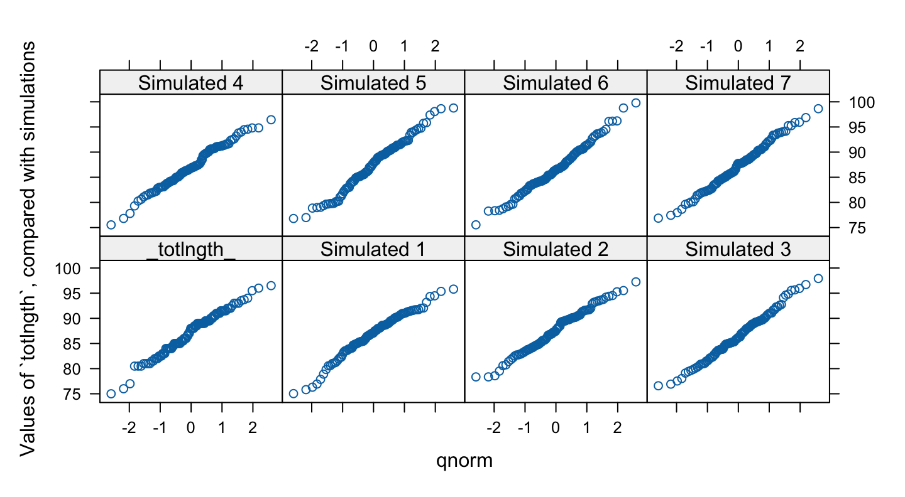

demo(graphics)2 Base R Graphics
Most of the attention will be on base graphics. Base graphics functions in the style of plot() and allied functions are designed to directly create graphs that appear in printed output or on the screen.
This contrasts with the approach in lattice and in ggplot2 graphics, where graphics functions create graphics objects, i.e., instructions for creating a plot, rather than a plot on the screen or page. Plotting (or printing) is then a process by which those instructions are used to create a plot on the graph or screen. In this context, plot() (or print()) are used as generic functions, whose action is determined by the class of object.
2.1 The base graphics plot() scatterplot function
The functions plot(), points(), lines(), text(), mtext(), axis(), and identify() are part of a suite that plots points, lines and text. To see some of the possibilities that R offers, enter
Press the Enter key to move to each new graph.
Plot methods for different classes of object
The plot function is a generic function that has special methods for “plotting” various different classes of object. For example, plotting a data frame gives, for each numeric variable, a normal probability plot. Plotting the lm object that is created by the use of the lm() linear model function gives diagnostic and other information that is designed to help in the interpretation of regression results. Try
plot(hills) # Has the same effect as `pairs(hills)`2.2 plot() and allied functions – some further details
The following both plot y against x:
plot(y ~ x) # Use a formula to specify the graph
plot(x, y) # It is usual for x and y to be numeric vectors of the same length. (Also possible, but rarely used, is for x to be a factor.) Try
plot((0:20)*pi/10, sin((0:20)*pi/10))
plot((1:30)*0.92, sin((1:30)*0.92))Compare the appearance that these graphs present. Is it obvious that these points lie on a sine curve? How can one make it obvious? (Place the cursor over the lower border of the graph sheet, until it becomes a double-sided arror. Drag the border in towards the top border, making the graph sheet short and wide.)
Two further examples are:
plot(distance ~ stretch, data=DAAG::elasticband)
plot(ACT ~ Year, data=DAAG::austpop, type="l")
plot(ACT ~ Year, data=DAAG::austpop, type="b")The points() function adds points to a plot. The lines() function adds lines to a plot . The text() function adds text at specified locations. The mtext() function places text in one of the margins. The axis() function gives fine control over the adding of axis ticks and labels, usually on a graph where one or both axes have been omitted (xaxt='n' or yaxt='n' or axes=false) from the initial plot.
Here is a further possibility
plot(spline(Year, ACT), data=DAAG::austpop, type="l")
# Fit smooth curve through pointsSize, colour, and choice of plotting symbol
For plot() and points() the parameter cex (“character expansion”) controls the size, while col (“colour”) controls the colour of the plotting symbol. The parameter pch controls the choice of plotting symbol. The parameters cex and col may be used in a similar way with text(). Try
oldpar <- par(mar=rep(0.15,4))
plot(1, 1, xlim=c(1, 7.35), ylim=c(1.75,5), type="n", axes=F, xlab="",
ylab="") # Do not plot points or axes
box() # Draw a box around the plot area
points(1:7, rep(4.65, 7), cex=2:8, col=1:7, pch=0:6, lwd=4)
text(1:7,rep(3.5, 7), labels=paste(0:6), cex=2:8, col=1:7)The following, added to the plot that results from the above three statements, demonstrates other choices of pch.
points(1:7,rep(2.5,7), pch=(0:6)+7, cex=3) # Plot symbols 7 to 13
text((1:7), rep(2.5,7), paste((0:6)+7), pos=4, cex=1) # Add symbol number
points(1:7,rep(2,7), pch=(0:6)+14, cex=3) # Plot symbols 14 to 20
text((1:7), rep(2,7), paste((0:6)+14), pos=4, cex=1) # Add symbol number
par(oldpar)Note the use of pos=4 to position the text to the right of the point (1=below, 2=left, 3=top, 4=right). Figure 2.1 shows the plots:

A variety of color palettes are available. Figure 2.2 shows some of the possibilities:
view.colors <- function(xlim=c(0.55,10.9), ylim=c(0,4)){
oldpar <- par(mar=rep(0.15,4))
plot(1, 1, xlim=xlim, ylim=ylim, type="n", axes=F,
xlab="",ylab="", xaxs="i", yaxs="i")
text(1:8, rep(3.5,8), paste(1:8), col=palette()[1:8], cex=4)
text(9, 3.5, "Default palette", adj=0)
rainchars <- c("R","O","Y","G","B","I","V")
text(1:7, rep(2.5,7), rainchars, col=rainbow(7), cex=4)
text(9, 2.5, "rainbow(7)", adj=0)
## topo.colors()
rect((1:8)-0.5, rep(1.05,8), (1:8)+0.5, rep(1.95,8), col=topo.colors(8))
text(1:8, rep(1.5,8), paste(1:8), col="gray", cex=2)
text(9, 1.5, "topo.colors(8)", adj=0)
## heat.colors()
rect((1:8)-0.5, rep(0.05,8), (1:8)+0.5, rep(0.95,8), col=heat.colors(8))
text(1:8, rep(0.5,8), paste(1:8), col="gray", cex=2)
text(9, 0.5, "heat.colors(8)", adj=0)
par(oldpar)
}To run the function, enter
Fine control – Parameter settings
The default settings of parameters, such as character size, are often adequate. In order to change parameter settings for a subsequent plot, use the par() function. For example
par(cex=1.25) # character expansion
This increases the text and plot symbol size 25% above the default. On the first use of par() to make changes for the current device, it is often useful to store existing settings, so that they can be restored later. For this, specify, e.g.
oldpar <- par(cex=1.25, mex=1.25) # mex=1.25 expands the margin by 25%This stores the existing settings in oldpar, then changes parameters (here cex and mex) as requested. To restore the original parameter settings at some later time, enter par(oldpar). Here is an example:
oldpar <- par(cex=1.5)
plot(distance ~ stretch, data=elasticband)
par(oldpar) # Restores the earlier settingsInside a function one can specify, e.g.
oldpar <- par(cex=1.25)
on.exit(par(oldpar))Type in help(par) to get details of available parameter settings.
Multiple plots on the one page
The parameter mfrow can be used to configure the graphics sheet so that subsequent plots appear row by row, one after the other in a rectangular layout, on the one page.
For a column by column layout, use mfcol instead. Figure 2.3 uses a two by two layout to show plots of brain versus body with four different transformations, for data in the DAAG::MASS::Animals data frame:
brain versus body for 26 different animals, with four different transformations.
## Code
par(mfrow=c(2,2))
with(MASS::Animals, {
plot(body, brain)
plot(sqrt(body), sqrt(brain))
plot(body^0.1, brain^0.1)
plot(log(body),log(brain))
})Note the use of braces ({,}) to bracket together the four plot statements, as a way to ensure that in all four cases the variable names refer to columns of the MASS::Animals data frame.
The shape of the graph sheet
One may for example want the individual plots to be rectangular rather than square. The R for Windows functions win.graph() or x11() that set up the Windows screen take the parameters width (in inches), height (in inches) and pointsize (in 1/72 of an inch). The setting of pointsize (default =12) determines character heights. It is the relative sizes of these parameters that matter for screen display or for incorporation into Word and similar programs. Graphs can be enlarged or shrunk by pointing at one corner, holding down the left mouse button, and pulling.
2.3 Adding points, lines, and text
Use the function points() to add points. Use lines() to join successive lines to points.
Adding a specified line to plots
Use the function abline() for this. The parameters may be an intercept and slope, or a vector that holds the intercept and slope, or an lm object. Alternatively it is possible to draw a horizontal line (h = v =
Panel A makes it clear why a logarithmic or other power transformation is needed. Panel B adds both a least squares regression line and a robust regression line.
Figure 2.4 shows plots of brain weight (gm) against body weight (kg), for 28 species of land animals. Logarithmic scales on both axes result in a meaningful plot, shown in Panel B. Two lines have been added – a least squares regression line (in black), and a robust regression line (in red).
The robust regression line makes a more sense than the least squares line. There are a number of animals with large body weight that have a larger brain weight than the red line would suggest.
Code for Panel B is:
Animals.lm <- lm(log10(brain) ~ log10(body), data=Animals)
Animals.rlm <- MASS::rlm(log10(brain) ~ log10(body), data=Animals)
abline(Animals.rlm, col=2)Adding text
Here is a simple example that uses the function text() to add text labels to the points on a plot. Data are
primates <- DAAG::primates
primates
Bodywt Brainwt
Potar monkey 10.0 115
Gorilla 207.0 406
Human 62.0 1320
Rhesus monkey 6.8 179
Chimp 52.2 440
## Observe that the row names store labels for each rowFigure 2.5 (a) would be adequate for identifying points, but is not a presentation quality graph. Figure 2.5 (b) uses the xlab (x-axis) and ylab (y-axis) parameters to specify meaningful axis titles. It uses the parameter setting pos=4 to move the labeling to the right of the points. It sets pch=16 to make the plot character a heavy black dot. This helps make the points stand out against the labeling.
To place the text to the left of the points, specify
text(x=Bodywt, y=Brainwt, labels=row.names(primates), pos=2)Here is the R code for Figure 2.5:
Adding Text in one of the margins
Use mtext(side, line, text, ..) to add text in a margin (side) of the current plot. The sides are numbered 1(x-axis), 2(y-axis), 3(top) and 4(right).
Identification and Location on the Figure Region
The functions identify() and locator() can be used for this purpose. Draw the graph first, then call one or other of these functions.
Use locator() to show the co-ordinates of points, and identify() to label points. Position the cursor near the point whose co-ordinates are required, and click the left mouse button. prints out the co-ordinates of points. One positions the cursor at the location for which coordinates are required, and click the left mouse button. Depending on the screen device, a click with a mouse button other than the first, or pressing the ESC key terminates the process and returns a list that has the co-ordinates of the points. Or, if the setting of the parameter n (by default 360) is reached first, that terminates the process and returns the list.
The function identify() requires specification of a vector x, a vector y, and a vector of text strings that are available for use a labels. The parameter n is set to the number of points. Click to the left or right, and slightly above or below a point, depending on the preferred positioning of the label. When labeling is terminated, the row numbers of the observations that have been labelled are printed on the screen, in order. Thus try:
plot(brain ~ body, data=MASS::Animals)
with(primates, identify(Bodywt, Brainwt, rownames(primates)))The function can be used to mark new points (specify type="p") or lines (specify type="l") or both points and lines (specify type="b").
2.4 Plots that show the distribution of data values
We discuss histograms, density plots, boxplots and normal probability plots.
Histograms and density plots
The shapes of histograms depend on the placement of the breaks, as Figure 2.6 illustrates:
par(mfrow=c(1,3))
possum <- DAAG::possum
with(possum, {
here <- sex == "f"
hist(totlngth[here], breaks = 72.5 + (0:5) * 5, ylim = c(0, 22),
xlab="Total length", main ="A: Breaks at 72.5, 77.5, ...")
plot(density(totlngth[here]),type="l", main="B: Density curve")
dens <- density(totlngth[here])
xlim <- range(dens$x)
ylim <- range(dens$y)
hist(totlngth[here], breaks = 72.5 + (0:5) * 5, probability = TRUE,
xlim = xlim, ylim = ylim, xlab="Total length",
main="C: Breaks at 73, 78, ...")
lines(dens)
})Here is the code used to plot the histogram in Figure 2.6 A.
with(possum, {
here <- sex == "f"
hist(totlngth[here], breaks = 72.5 + (0:5) * 5, ylim = c(0, 22),
xlab="Total length", main ="A: Breaks at 72.5, 77.5, ...")
})Density plots, now that they are available, are often a preferred alternative to a histogram. A histogram may be viewed as a crude form of density plot. Density plots do not depend on a choice of breakpoints. The choice of width and type of window, controlling the nature and amount of smoothing, does affect the appearance of the plot, making it more or less smooth. The following will give a density plot:
plot(density(totlngth[here]),type="l")
detach(possum)In Figure 2.6 B the y-axis for the histogram is labelled so that the area of a rectangle is the density for that rectangle, i.e., the frequency for the rectangle is divided by the width of the rectangle. This gives a scale that is appropriate for superimposing a density curve estimate. The only difference between Figure 2.6 C and Figure 2.6 B is that a different choice of breakpoints is used for the histogram, so that the histogram gives a rather different impression of the distribution of the data. Code for Figure 2.6 B is:
with(possum, {
here <- sex == "f"
dens <- density(totlngth[here])
xlim <- range(dens$x)
ylim <- range(dens$y)
hist(totlngth[here], breaks = 72.5 + (0:5) * 5, probability = TRUE,
xlim = xlim, ylim = ylim, xlab="Total length", main="")
lines(dens)
})Dotcharts and stripcharts
These can be a good alternative to barcharts. They have a much higher information to ink ratio! Try
dotchart(islands) # vector of named numeric values, in the datasets packageUnfortunately there are many names, and there is substantial overlap. Either enlarge the graph to occupy a large display screen, or plot with perhaps cex=0.5, so that the names can be distinguished.
Note also stripcharts, obtained using stripchart(). Try, e.g.:
stripchart(decrease ~ treatment, log = "x", data = OrchardSprays)Boxplots
Figure 2.7 shows a boxplot of the female possum lengths:
Code for the boxplot, without the annotation, is
totlngth <- subset(DAAG::possum, sex=="f")$totlngth
boxplot(totlngth[here], horizontal=TRUE, xlab="Total length (cm)")
rug(totlngth, side=1) # Add a 'rug' that shows the location of pointsFigure 2.7 adds interpretative information. Also a ‘rug’, showing the location of individual data points, has been added.
Normal probability plots
Type qqnorm(y) to obtain a normal probability plot of the elements of y.
The points of a normal probability plot will on average lie on a straight line if the distribution is Normal. In order to calibrate the eye to recognize plots that indicate non-normal variation, it is helpful to do several normal probability plots for random samples of the relevant size from a normal distribution. Look ahead to Figure 2.12, which uses the lattice function qqmath(), with a much more effective graph than is readily obtained using base graphics functions.
2.5 Scatterplot smoothing
The function panel.smooth() plots points, then adds a smooth curve through the points. As an example, consider the MASS:forbes data frame that has 17 observations of barometric pressure (bp, inches of mercury) and boiling point of water (bp, degrees Fahrenheit), at various locations in the Alps. Figure 2.8 plots the data, and adds a smooth curve. A dashed line has been added for comparison.
The parameter span, specifying the proportion of points that influence the smoothed value at each point, can be used to control the smoothness. The default is \(\frac{2}{3}\).
2.6 Lattice graphics
Lattice plots allow the use of the layout on the page to reflect meaningful aspects of data structure. The lattice package sits on top of the grid package. To use lattice graphics, both these packages must be installed.
Providing it is installed, the grid package will be attached automatically when lattice is attached.
The lattice package has now to an extent been overtaken by the ggplot2 package, with its richer and more complex language syntax. A number of packages have been built on top of ggplot2, aimed at providing specific types of graph, that allow users to work around much of the complexity. Functions in lattice and ggplot2 return a graphics object, i.e., instructions for creating a plot, rather than a plot. This can be successively updated using the update() function, and/or new layers added, before using the generic print() (or plot() has the same effect) function or to produce a plot. Explicit use of print() or plot() is not required – all that is needed is to return type the object name on the command line, effectively sending its instructions to the command line.
The function name print emphasizes that the main part of the work required to produce a graph has already been done before the print() function is called – all that is then required is take the instructions that have been embedded in the graphics object and use them to show a graph on the screen or on the printed page. Readers who wish to pursue use of ggplot2 and of packages built on ggplot2 are referred to the extensive tutorial resources available on the web.
Examples that Present Panels of Scatterplots – Using xyplot()
The basic function for creating panels of scatterplots is xyplot(). As an example, consider data, in the data frame DAAG::tinting, that are from an experiment that investigated the effects of tinting of car windows on visual recognition performance, primarily for visual recognition tasks that would be performed through side windows. Variables are csoa (critical stimulus onset asynchrony, i.e. the time in milliseconds required to recognize an alphanumeric target), it (inspection time, i.e., the time required for a simple discrimination task) and age, with ordered factors tint (level of tinting: no, lo, hi), target (contrast: locon, hicon), and agegp (1 = young, in the early 20s; 2 = an older participant, in the early 70s), and the factor sex (1 = male, 2 = female). Figure 2.9 shows the style of graph that one can get from xyplot(). The different symbols are different contrasts.
Loading required package: lattice## Code
library(latticeExtra)
xyplot(csoa ~ it | sex * agegp, data = DAAG::tinting,
panel = panel.superpose,
groups = target, auto.key = list(columns = 2))Addition of the argument groups=target has the result that two different colors of symbol are used to distinguish between low contrast and high contrast targets. To use different symbols, add an argument in the style of par.settings=simpleTheme(pch=c(1,16)). Additionally, or instead, it would make sense to use lighter and darker colors for the two levels of contrast. Code is easier to follow if one starts with the graphics object needed for Figure 2.9 and then updates it:
gph <- xyplot(csoa ~ it | sex * agegp, data = DAAG::tinting,
panel = panel.superpose, groups = target)
update(gph, auto.key = list(columns = 2),
par.settings=simpleTheme(pch=16, col=c("lightblue3","blue")))
# As the result goes to the command line, it is `printed`
update(gph, groups = target, auto.key = list(columns = 2),
par.settings=simpleTheme(pch=16, col=c("lightblue3","blue")))A striking feature is that the very high values, for both csoa and it, occur only for elderly males. It is apparent that the long response times for some of the elderly males occur, as we might have expected, with the low contrast target.
Figure 2.10 puts smooth curves through the data, separately for the two target types:
xyplot(csoa~it|sex*agegp, data=DAAG::tinting, groups=target,
type=c("p","smooth"))The relationship between csoa and it seems much the same for both levels of contrast. Finally, we do a plot (Figure 2.11) that uses different symbols (in black and white) for different levels of tinting. The longest times are for the high level of tinting.
## Code
lattice::xyplot(csoa ~ it | sex * agegp, data = DAAG::tinting,
groups = tint, auto.key = list(columns = 3))Plotting columns in parallel
Use the parameter outer to control whether the columns appear on the same or separate panels. If on the same panel, it is desirable to use auto.key to give a simple key. The following use the dataset grog from the DAAGxtras package:
library(DAAG)
xyplot(Beer+Spirit+Wine ~ Year | Country, outer=TRUE,
data=grog)
xyplot(Beer+Spirit+Wine ~ Year, groups=Country, outer=TRUE,
data=grog)
xyplot(Beer+Spirit+Wine ~ Year | Country, outer=FALSE,
data=grog, auto.key=list(columns=3),
par.settings=simpleTheme(pch=16, cex=2) )In the final plot, note the use of simpleTheme() as a simple mechanism for controlling common parameter settings. Use of the parameter par.settings makes the change for the current plot only. Use trellis.par.set() to make the changes for the duration of the current device, unless reset.
### Fixed, sliced and free scales
jobs <- DAAG::jobs
## scale="fixed"
xyplot(BC+Alberta ~ Date, data=jobs, outer=TRUE)
## scale="sliced" - different slices of same scale
xyplot(BC+Alberta ~ Date, data=jobs, outer=TRUE,
scales=list(y=list(relation="sliced")) )
## scale="free" - independent scales
xyplot(BC+Alberta ~ Date, data=jobs, outer=TRUE,
scales=list(y=list(relation="free")) )Data, compared with simulated normal data
Is the sample data consistent with random normal data?

There is one unusually small value. Otherwise the points for the female possum lengths are as close to a straight line as in many of the plots for random normal data. Code is:
The idea is an important one. In order to judge whether data are normally distributed, examine a number of randomly generated samples of the same size from a normal distribution. It is a way to train the eye, to give an idea of the extent to which departures from linearity may be explained as random variation The mean and standard deviation is best matched to that of the data that are under investigation.
For comparison, for readers who are interested, here is code that plots the same data using base graphics:
par(mfrow=c(2,4), mgp=c(1.8,0.5,0), mar=c(3.1,3.6,2.6,1.6)) # A 2 by 4 layout of plots
gps <- unique(dat$gp)
for (val in gps){
x <- subset(dat, gp==val)$y
qqnorm(x, xlab="", ylab="Length", main=levs)
}Adding new layers
The latticeExtra package provides wide-ranging abilities for overlaying or underlaying an existing graphics object. Or, given an initial graphics object, a separate graphics object can be converted to a layer that is then added to the initial object.
In each instance, conditioning variables can be added. In most cases, a groups parameter can be specified, i.e., the plot is repeated for the groupings within the one panel. The data on athletes in the Australian Institute of Sport, in the dataset DAAG::ais will be used for the example that now follows. The following show haemoglobin count versus red blood cell count, distinguished by sport within panel, with separate panels for females and males:
library(latticeExtra)
aisBS <- subset(DAAG::ais, sport %in% c("B_Ball", "Swim"))
basic1 <- xyplot(hc ~ rcc | sex, groups=sport[drop=TRUE], data=aisBS)
basic2 <- update(basic1,
par.settings=simpleTheme(pch = c(1,3), lty=1:2, lwd=1.5),
# Plot characters 1 and 3 distinguish the groups
strip=strip.custom(factor.levels=c("Female","Male")),
# Label the panels "Female" and "Male", not "f" and "m"
scales=list(tck=0.5), auto.key=list(columns=2))Printing the object basic1 would give a very basic plot. The object basic2 sets separate line types for males and females, creates thicker lines, specefies strip level names that are different from the group level names, reduces the length of the axis ticks, and adds a key.
The xyplot() function has provision for the addition of separate lines for the two sports, but not for the parallel lines that are preferred. The following creates a new layer. The values x and y will be taken from the data used for the object basic1, when the new layer is added. Code for the new layer is:
layer2 <- layer(parallel.fit <-
fitted(lm(y ~ groups[subscripts] + x)),
panel.superpose(x, parallel.fit, type = "r", ...))The following prints the graph:
basic2+layer2### An incomplete list of _lattice_ Functions {-}
splom( ~ data.frame) # Scatterplot matrix
bwplot(factor ~ numeric , . .) # Box and whisker plot
qqnorm(numeric , . .) # normal probability plots
dotplot(factor ~ numeric , . .) # 1-dim. Display
stripplot(factor ~ numeric , . .) # 1-dim. Display
barchart(character ~ numeric , . .)
histogram( ~ numeric , . .)
densityplot( ~ numeric , . .) # Smoothed version of histogram
qqmath(numeric ~ numeric , . .) # QQ plot
splom( ~ dataframe, . .) # Scatterplot matrix
parallel( ~ dataframe, . .) # Parallel coordinate plots
cloud(numeric ~ numeric * numeric, . .) # 3-D plot
contourplot(numeric ~ numeric * numeric, . .) # Contour plot
levelplot(numeric ~ numeric * numeric, . .) # Contour plot variant2.7 Using mathematical expressions in plots
The following is a simple example. For this purpose, an expression has a much extended syntax, relative to that for a mathematical expression. See ?plotmath.
`
par(mgp=c(1.8,0.5,0), mfrow=c(1,2))
r <- 1:15
y <- pi*r^2
plot(r, y, xlab=expression("Radius = "*r), ylab=expression(Area == pi*~r^~2))
title(main=expression("A: Plot of Area = "*pi*~r^2 *" vs Radius = "*r))
curve(log(x/(1-x)), from=0.01, to=0.99, xlab=expression(pi),
ylab=expression(log(frac(pi,1-pi))))
title(main=expression("B: Plot of "*log(frac(pi,1-pi))*" against "*pi))For lattice and ggplot2 graphics as well as base graphics, expressions of the type shown can appear anywhere in place of a character vector.
Notice that in ylab = expression(Area == pi*r^2), there is a double equals sign (==), although what will appear on the plot has a single equals sign. See ?plotmath for detailed information on the plotting of mathematical expressions. Notice that * juxtaposes both text and mathematical symbols. Notice also that ~ been used to insert space before \(r\) and phantom(,) between \(r\) and the superscript 2. The final plot from demo(graphics) demonstrates some of the possibilities for plotting mathematical symbols.
2.8 Guidelines for Graphs
Design graphs to make their point tersely and clearly, with a minimum waste of ink. Label as necessary to identify important features. In scatterplots the graph should attract the eye’s attention to the points that are plotted, and to important grouping in the data. Use solid points, large enough to stand out relative to other features, when there is little or no overlap.
When there is extensive overlap of plotting symbols, use open plotting symbols. Where points are dense, overlapping points will give a high ink density, which is exactly what one wants.
Use scatterplots in preference to bar or related graphs whenever the horizontal axis represents a quantitative effect.
Use graphs from which information can be read directly and easily in preference to those that rely on visual impression and perspective. Thus in scientific papers contour plots are much preferable to surface plots or two-dimensional bar graphs.
Draw graphs so that reduction and reproduction will not interfere with visual clarity.
Explain clearly how error bars should be interpreted — SE limits, 95% confidence interval, 2 SD limits, or whatever. Explain what source of error(s) is represented.
It is pointless to present information on a source of error that is of little or no interest, for example analytical error when the relevant source of `error’ for comparison of treatments is between fruit.
Use colour or different plotting symbols to distinguish different groups. Take care to use colours that contrast.
2.9 Exercises
- The data set
huronthat accompanies these notes has mean July average water surface elevations, in feet, IGLD (1955) for Harbor Beach, Michigan, on Lake Huron, Station 5014, for 1860-1986 . (Alternatively work with the vectorLakeHuronfrom the datasets package, that has mean heights for 1875-1972 only.)
- Plot mean.height against year.
- Use the identify function to label points for the years that correspond to the lowest and highest mean levels. That is, type
identify(huron$year,huron$mean.height,labels=huron$year)and use the left mouse button to click on the lowest point and highest point on the plot. To quit, press (depending on the operating system) a mouse button other than the left, or press ESC.
c) As in the case of many time series, the mean levels are correlated from year to year. To see how each year’s mean level is related to the previous year’s mean level, use
lag.plot(huron$mean.height)This plots the mean level at year i against the mean level at year i-1.
Plot the graph of
log(brain weight)versuslog(body weight), for the data set Animals from the MASS package. Use the row labels to label the points corresponding to the three clear outliers.Check the distributions of head lengths (
hdlngth) in the possum data set that accompanies these notes. Compare the following forms of display:
- a histogram (
hist(possum$hdlngth));
- a stem and leaf plot (
stem(possum$hdlngth)); - a normal probability plot (
qqnorm(possum$hdlngth)); and - a density plot (
plot(density(possum$hdlngth))). What are the advantages and disadvantages of these different forms of display?
Try
x <- rnorm(10). Print out the numbers that you get. Look up the help for rnorm. Now generate a sample of size 10 from a normal distribution with mean 170 and standard deviation 4.Use
mfrow()to set up the layout for a 3 by 4 array of plots. In the top 4 rows, show normal probability plots for four separate `random’ samples of size 10, all from a normal distribution. In the middle 4 rows, display plots for samples of size 100. In the bottom four rows, display plots for samples of size 1000. Comment on how the appearance of the plots changes as the sample size changes.The function
runif()generates a sample from a uniform distribution, by default on the interval 0 to 1. Tryx <- runif(10), and print out the numbers you get. Then repeat exercise 6 above, but taking samples from a uniform distribution rather than from a normal distribution. What shape do the points follow?
*7. If you find exercise 6 interesting, you might like to try it for some further distributions. For example x <- rchisq(10,1) will generate 10 random values from a chi-squared distribution with degrees of freedom 1. The statement x <- rt(10,1) will generate 10 random values from a \(t\) distribution with degrees of freedom one. Make normal probability plots for samples of various sizes from these distributions.
For the first two columns of the data frame hills, examine the distribution using: (a) histogram; (b) density plots; (c) normal probability plots.
Repeat (a), (b) and (c), now working with the logarithms of the data values.This and remaining exercises ask for the use of lattice functions. The following data gives milk volume (g/day) for smoking and nonsmoking mothers :
Smoking Mothers: 621, 793, 593, 545, 753, 655, 895, 767, 714, 598, 693
Nonsmoking Mothers: 947, 945, 1086, 1202, 973, 981, 930, 745, 903, 899, 961Present the data (i) in side by side boxplots (use bwplot()); (ii) using a dotplot form of display (use dotplot()).
- For the
possumdata set, use lattice functions to generate the following plots:
- histograms of
hdlngth– usehistogram();
- normal probability plots of
hdlngth– useqqmath();
- density plots of
hdlngth– usedensityplot(). Investigate the effect of varying the density bandwidth (bw).
- The following exercises, all using lattice functions, relate to the data frame
DAAG::possum:
- Using
xyplot(), explore the relation betweenhdlngthandtotlngth, taking into accountsexandPop.
- Construct a contour plot of
chestversusbellyandtotlngth– uselevelplot()orcontourplot().
- Construct box and whisker plots for
hdlngth, usingsiteas a factor.
- Use
qqmath()to construct normal probability plots forhdlgth, for each separate level ofsexandPop. Does it appear that the distribution ofhdlgthvaries with the level of these other factors.
- The dataframe
airquality(datasets package) has columnsOzone,Solar.R,Wind,Temp,MonthandDay. Usexyplot()to plotOzoneagainstSolar.Rfor each of the three temperature ranges, and for each of three wind ranges.
2.10 References and reading
The web page https://www.eecs.yorku.ca/~papaggel/courses/eecs6414/index.html
has links to many different collections of information on statistical graphics.
Chang (2013) . R graphics cookbook. O’Reilly.
Murrell (2011) . R Graphics. Chapman and Hall/CRC.